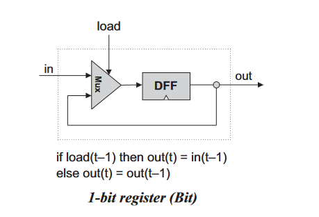

计算机系统要素学习笔记 Part1——从 NAND 到 CPU
开摆多日，心态越来越好了。开始学底层，准备给它串起来！跟着 coursera/building-a-computer 做。考虑到某种学术诚信原则（虽然大概也没人管），不贴任何答案，只贴思路。
这篇笔记包括此课的 1-5 单元，第 6 单元汇编器和此课的 part2 留待下一篇笔记。
组合门逻辑
简化主要是依靠德摩根律：a and b = !(!a or !b)，a or b = !(!a and !b)。
面对复杂的组件，写出它的真值表，对输出的每一列，找到它为 1 的行，对该行的每个输入，使用 and 拼接起来，其中为 0 的加 not，这样得到的子句只对该行为 1，将这些子句用 or 连接起来并化简便得到最终结果。
比如，对半加器，有：
| a | b | out | carry |
|---|---|---|---|
| 0 | 0 | 0 | 0 |
| 0 | 1 | 1 | 0 |
| 1 | 0 | 1 | 0 |
| 1 | 1 | 0 | 1 |
对每一个输出，用 or 联立每个结果为 1 的行，有：
1 | |
いろいろ
在这本书里，Nand 是 primitive 的，其它门都通过它来实现。
Not, And, Or, Xor
考虑a nand b = !(a and b), a and a = a, 有 a nand a = !a，即!a = a nand a。
Nand 是 Not And，有了 Not 了，再来个 Not 就得到 And 了，即a and b = !(a nand b)
根据德摩根律，a or b = !(!a and !b)。现在 And，Not 和 Or 均有了，因此一切布尔函数均可以被表示了。
关于异或 Xor，其检查两个输入是否不同，不同则返回 1。
a xor b = (a and !b) or (b and !a)。
Mux, DMux
Mux 即多路复用器，它根据一个 sel 输入来从两个输入中选择一个做输出，sel 为 0 时选择 a，sel 为 1 时选择 b——就像一个 bit 的 if-else—— sel == 0 ? a : b = (sel and b) or (!sel and a)。
| a | b | sel | out |
|---|---|---|---|
| 0 | 0 | 0 | 0 |
| 0 | 0 | 1 | 0 |
| 0 | 1 | 0 | 0 |
| 0 | 1 | 1 | 1 |
| 1 | 0 | 0 | 1 |
| 1 | 0 | 1 | 0 |
| 1 | 1 | 0 | 1 |
| 1 | 1 | 1 | 1 |
DMux 是数据分配器，它有一个输入，根据一个 sel 输入来从两个输出中选择一个做输出，就像电车难题那玩意……或者 go 那套。outA = sel == 0 ? in : 0 = !sel and in，outB = sel == 1 ? in : 0 = sel and in。
| in | sel | outA | outB |
|---|---|---|---|
| 0 | 0 | 0 | 0 |
| 1 | 0 | 1 | 0 |
| 1 | 0 | 0 | 1 |
| 1 | 1 | 0 | 1 |
感觉有时候把 sel 当作 Mux 和 DMux 上的一个开关（状态），把 a，b，in 当作参数会有帮助。
Or8Way, Mux4Way16，Mux8Way16, DMux4Way, DMux8Way
16Bit 的 Not 和 And 等的实现也没啥差，逐位做相应操作就得了。虽然有点怪，但 Mux16 也是逐位做同样操作。
XWay 指的是有 X 路输入，16 表示 16 比特，因此 Or8Way 表示 8 路输入 Or 门，Mux8Way16 表示 16Bit 的 8 路输入的 Mux。
Or8Way 的实现是容易的，想想计算1 + 2 + 3是怎么算的，(1 + 2) + 3，虽然结合性无关紧要啦。
Mux4Way16 有 4 路输入，因此需要两个 sel 来标识使用哪路输入：
1 | |
可以给!sel[0] and !sel[1] 命名 selA，给!sel[0] and sel[1]命名 selB……来让实现更清晰。为了扩展 selA 的位长可以使用 Mux16。
更聪明的解决方案是逐步缩小“查询”的范围，首先根据 sel 的第一位，确定要查询的是ac还是bd，再根据 sel 的第二位决定是取a还是b，c还是d……
Mux8Way16 也是同样的思路，先根据 sel 的一二位确认要查询的范围是ae，bf，cg或dh，再根据第三位确认取a或是e……
DMux4/8Way，从 4/8 个输入中选择一个。思路也是一样的，但“查询”要改为“分发”，并且要先根据最高位决定分发到ab还是cd……
半加器，全加器
十进制加法是怎么算的？比如，4234+7639。我们从右往左，挨个数字挨个数字做加法，如果加法的结果大于等于 10，给它左边的数上写一个 1 标识有进位（称作 carry），然后算左边的数的时候这个 1 也要算上，注意进位最大只会为 1
1 | |
二进制加法也一样，从右往左挨个数字做加法，如果加法的结果大于等于 10（二进制的 2），给它左边的数上写一个 1 标识有进位，算它左边的数的时候这个 1 也要算上……比如 1101 + 1111：
1 | |
注意这个算式的每一列，对于最左边的一位，是两个二进制数进行运算，对于其它的位，是上一位的进位以及这一位的两个二进制数，总共三个二进制数进行运算。实现两个二进制数的加法的硬件叫做半加器 Half Adder，实现三个二进制数的加法的硬件叫做全加器 Full Adder，能够看出来，只要能实现全加器，我们就能实现任意位数的二进制数的运算。
ALU
ALU 即算术逻辑单元，是 CPU 中负责计算的部分，它有三个参数——f：决定当前使用的计算功能（预先规定好的，抉择多少部分在硬件实现，多少部分在软件实现是个两难的抉择），如加减乘除和逻辑运算，这通常是数个 bit 的输入，用来指示使用 ALU 的什么功能；两个输入 input1 和 input2，然后输出结果f(input1, input2)（以及一些其它的标识特定状态的输出，比如溢出）。
前面的各种基础门电路以及全加器，半加器，在不同的计算机中总是长得一样的，但 ALU 则更少通用性。
关于这里的 f，它是数个 bit 的标识位，从外界看来，特定 bit 的组合会标识要使用何种计算功能，在实现上，这些每个 bit 都是在通过对 x，y，x 和 y 要进行的运算，out 进行一系列的修改来最终实现特定的效果（即用户看到的功能），比如这里要实现的 ALU 有六个标识位，每个标识位代表对 x，y 先执行特定操作，使用何种运算，以及对 out 做何种操作。
实现是不止一种的，只需要最终的结果符合 specification 即可，这是说，下图中红框标出来的部分是实现相关的，是可以任意地去修改的，只要最终达到的效果满足该表即可。但该表的设计也是会考虑到实现的方便程度的。

时序逻辑
前面写的各种门电路，其行为就像纯函数——输出只取决于输入，一切都是瞬间完成的（实际并非如此）。这也决定它们无法保持有状态。这是组合逻辑。
物理的时间是连续的，使用间歇输出 1 和 0 的振荡器，能够将物理的时间进行划分成一个个离散的周期，每个周期作为一个时间单位。周期是原子的，不需要考虑周期内发生的事情（此乃谎言），只要周期设计的足够长，保证在周期结束时所有输入输出都已稳定。周期结束的时候是我们能看到系统当前逻辑状态的时候，同时也是根据当前状态和输入去更新所有输入输出状态的时候，即下一个周期的开始，所有输入输出马上又开始不确定了。

时序逻辑使能够引入状态，让输出能够被当前状态（或者说上一次的输入）来决定。时序逻辑会引入时钟，最基础的能够保持状态的芯片叫做 DFF，Data flip-flop，它的行为是每个时刻输出上一个时刻的输入，out(t) = in(t - 1)，这里的 t 指第 t 个时钟周期。

注意 t=1 时 out 是不确定的，因为此时还没有上一个时钟周期。以及，计算机中的每一个 DFF 或者同类的元件必须连接同一个时钟。
1 | |
那如何利用 DFF 去保持状态呢？只要让当前时刻的输出等于上一时刻的输出，就等于是保持了这个输出作为状态。而为了让该状态能持续被保存，需要其能访问其上一个状态，也就是说这里需要造一个环路。为了避免输入的二义性，可以用一个 Mux 去区分，当前是要从输入中取数据还是从上一个状态中取数据，对于前者，对下一个周期，状态会改为当前的输入，否则状态保持不变。保持状态的组件，其实现的“模式”如下图，一切包含状态的组件，其实现总是类似的形式，无论它是寄存器，计数器还是内存。

_1 Bit 寄存器，16Bit 寄存器
load 为 1 表示去加载新的值（其实这个该叫 save 啊 hh），否则输出当前保存的值。

在模拟时，周期要分为两个部分——tick 和 tock，tick 是存储器根据输入更改当前存储的值的时刻（此时处在周期的一个中间状态，似乎是上升沿），tock 是存储器修改输出值的时刻；tick 是当前周期的一个中间状态，tock 是下一个周期的开始。更多细节将来在其他课程再学。
16Bit 寄存器也是一样的，寄存器之间是平行的，它们一同保存状态，一同更新状态，因此 load 是需要是同一个 load。
RAM8，RAM64，RAM512
RAM8 是 8 地址的内存，每个地址对应一个 16Bit 的寄存器，每次只访问特定地址的寄存器，使用 DMux8Way 和 address 来决定 load 要写哪个地址，使用 Mux8Way16 和 address 来决定要读哪个地址。（纺锤形 w）
RAM64 是一样的，只不过把地址当作两部分看待，高 3 位从“外面”找到对应的 RAM8，低 3 位从 RAM8 中找到相应寄存器。
RAM512 是一样的，只不过把地址当作两部分看待，高 3 位从“外面”找到对应的 RAM64，低 6 位从 RAM64 中找到相应寄存器。
RAM4K（4096）是一样的，只不过把地址当作两部分看待，高 3 位从“外面”找到对应的 RAM512，低 9 位从 RAM512 中找到相应寄存器。
RAM16K 是一样的，只不过把地址当作两部分看待，高 2 位从“外面”找到对应的 RAM4096，低 12 位从 RAM4096 中找到相应寄存器。
PC
程序计数器，指示下一条要执行的指令的地址。寄存器需要有自增，覆盖（即跳转），置零的功能。
注意 PC 的逻辑：
1 | |
这有点像优先级，如果 reset 为 true，则 load 和 inc 就不管事了。为此需要反向来——先看 inc，暂存此时的结果（为原状态或原状态+1）；再看 load，如果 load 为 0，维持 inc 的结果，否则用 load 的结果（即输入）；再看 reset，如果 reset 为 0，维持 load 的结果，否则使用 reset 的结果（即 0），就像三个 Mux 的左结合的结果。
大概是这种感觉：
1 | |
另一个理解方式是通过计算的顺序来看，先把逻辑写成三目，这逻辑也可以写成：
1 | |
每一个三目是一个 Mux，根据三目的结合性，首先计算inc == 1 ? out + 1 : out，然后是load == 1 ? in : ...，因此 inc 的结果要喂给 load…然后 load 的结果又喂给 reset…
其依赖的寄存器的 load 总是设为 1。
机器语言
机器语言是硬件和软件的边界，机器语言由一系列的机器指令组成，程序员利用这些指令去进行运算，读写内存，操作寄存器等。高级语言设计是为了更抽象、更接近人类思维和富有表达力，机器语言设计是为了直接和完全地控制特定硬件平台。虽然优雅和强大也是被期望的，但它们得在满足直接操作硬件的基本需求之后才考虑。
硬件和机器语言是相辅相成的，既可以说是为了特定的硬件去设计机器语言，也可以说是为了特定的机器语言去设计相应硬件。需要理解其中一个来理解另一个，但同时两者很大程度上可以是独立的，比如可以在实际构建某计算机之前，先用高级语言写个虚拟机器去执行该计算机的机器语言程序以提供一些感性经验，从而能更好地做出决策，无论是对机器还是对机器语言（指令集）（这实际上也是说，同一个机器语言能对应不同的底层实现）。机器语言是用户的视角，用户通过机器语言能看到该计算机究竟能做什么，有何具体的特性（specification）。
忘掉硬件实现的话，机器语言中主要有三个抽象：处理器，内存和寄存器。可以认为机器语言是一种商定好的形式，设计用来使用处理器和寄存器去维护内存。
Hack 机指令集
Hack 机把指令和数据的地址区分开，指令存在 ROM 中，数据存在 RAM 中。
Hack 机的机器语言中有三个寄存器——D，A，M，D 代表数据（这玩意只有一个寄存器可用？），A 代表（ROM 或 RAM 中的）地址，M 代表内存，具体来说，代表的是RAM[A]。
Hack 机中有两种指令，A 指令和 C 指令，A 指令语法形如@value，其中 value 为非负十进制数，或者一个标识特定常量的符号（就像某些语言中的 label，用来指定 break 和 goto 的对象的）。A 指令设置 A 寄存器，以选择相应的内存RAM[A]或者要跳转到的指令（即下一条要执行的指令）ROM[A]。
C 指令语法为：[ dest "=" ] comp [";" jump]，（[]表示可选）其中 comp 指定一个计算，dest 表示计算后的值要送往的地址，jump 表示根据计算的结果进行相应的跳转操作。

示例如：
1 | |
A 指令以 0 开头，其后 15 位来标识一个值（因此其会小于等于 2 的 15 次方减 1）。
C 指令以 1 开头，然后两个 bit 没有使用，始终为 1，然后 7 个字节指示 comp，3 个字节 dest，3 个字节 jump。

IO
总不能一辈子活在 debug 页面里唱独角戏，要真正地处理现实问题，就得处理输入和输出。在 Hack 机中，映射特定的内存区域给屏幕和键盘，通过读写这些内存区域来进行输入和输出。
屏幕是输出设备，其会根据相应的内存映射去持续地刷新屏幕，具体来说，屏幕是 512x256 像素的，每个像素只有黑和白，因此只需要 1bit 信息（规定 1 是黑，0 是白，和常识是反着的），因此我们需要512x256/16=8192个字（word，在 hack 机中是 16 bit），即 8192 长度的内存去映射屏幕的像素信息。
键盘是输入设备，其会持续地根据用户的按键去使用其对应的值刷新某寄存器，对于字符和数字，使用 ASCII（字母使用大写的），对于功能按键，使用大于等于 128 的值，无按键时值为 0。
Hack Programming
使用高级语言编程时，有变量，表达式，控制流等概念，使用机器语言编程时，同样要采用这些概念，但和高级语言中不同的是，这些玩意并非是语言本身直接提供的，而是需要像模式，片段，或者样板一样去应用，使用多条指令去实现高级语言中一个语句的效果。在实际编写代码时，可以使用伪代码先把逻辑表示出来，再给它用人脑翻译成机器语言。
寄存器和内存
首先是和高级语言不同的，这里有 D 寄存器的概念，它是许多操作的中介，因为硬件限制没法直接在两块内存间做操作，需要借助 D 和 A。
下面是一些对 D 和内存的操作：
1 | |
此外，程序需要能被正确终止，解决方案是在代码最后进行一个无限循环，利用 jmp 去做到这一点。注意跳转的地址（下一条要执行的指令的地址）需要被正确地给定。注意每一行代码会被作为 ROM 中的每一个指令，因此只需要看有代码的行数即可确认跳转地址，注意这是从 0 开始的。
1 | |
但这里有两个问题：
- A 指令中，数据和地址混在一起了，这显然不是很好的编程习惯
- 指定指令地址时，需要检查代码文件的文本内容才能确定相应地址，这是及其离谱的，特别是在代码很长，有很多注释和空白时，我隔这敲 BASIC 呢？
它们均有解决方案，对于第一个问题，使用符号 R0-R15 去指代内存地址 0-15，这些符号被用作“虚拟寄存器”，使用这些符号能清晰地表示当前 A 存的值是一个内存地址，其他时候存的是值。为什么是 16 个？因为它们只是为了存一些临时的值，所以不需要定义太多。（如果这些寄存器直接就在 CPU 里就更好了，但为了硬件实现简单起见……）
同样地，可以给一些具有特定意义的内存地址命名，比如屏幕和键盘，实际上它们确实有，SCREEN=16384，KBD=24576。
第二个问题的解决方案是添加类似高级编程语言中的 label 的语法，其不代表实际的指令，只用来标识该处的实际地址（并创建临时的名字供引用），在翻译时将其进行转换。
分支逻辑
首先是分支逻辑，机器语言中只有 goto，所以分支逻辑需要使用 goto 去实现。需要稍微思考一下。其中使用了上面说的类似 label 的语法，使用(LABEL)去声明 label 并在其他地方引用，翻译时转换成 label 的下一条指令的地址。
1 | |
if，if-else 均有其样板。首先是只有 if，诀窍是 if 语句后的逻辑 following 紧跟 then_body，如果条件检查成功，直接跳转到 following，否则走 then_body 的逻辑，然后自然而然走 following 逻辑：
1 | |
if-else 是同样的，但可以先把 else_body 放前面，在检查失败后直接执行 else_body，然后再跳转到 following，then_body 放到 else_body 后，这样其执行完了就直接开始执行 following
1 | |
elseif 就有点整蛊，虽可以直接把 else 后面的 if 直接丢到 else 里，但这会造成太深的嵌套，非常难受。这时候不如按序检查每一个分支，检查成功则跳转到相应的逻辑，每个逻辑块最后都跳转到 FOLLOWING，else_body 紧跟在所有检查之后，并尾随一个跳转到 FOLLOWING。
1 | |
能注意到，分支逻辑都是向后跳转。
变量
考虑交换 R1 和 R0，藉由 R2：
1 | |
问题在于，这里并不是必须要 R2，任意一块内存都可以，特意去指定某块内存会把人弄糊涂。好在 assembler 有一个 feature——如果发现某个名字是没有定义过的（即其并非是预定义的如 R0-R15，也并非被(LABEL)语法去创建），它会自动地去将其替换为一个特定的内存地址，使该名字总是指向同一片内存地址，同时不会和其他名字指向的内存地址重复（实际上每个首次出现的名字对应的内存地址就是从 16 开始递增）。
1 | |
这就是“变量”，约定变量的名字是小驼峰。
使用变量而非绝对地址的另一个原因是，程序现在不必须放到 ROM 的开始位置了，放到任何位置都行，只要在进行翻译时正确处理各种名字映射的地址即可。这也允许同时加载多个程序。
迭代
考虑1 + 2 + .. + 100：
1 | |
显然，while 可以用 goto 去模拟一下：
1 | |
翻译后得到下面的代码：
1 | |
指针（数组）
如果需要使用指针，一定会手动对 A 赋值。下面是设置内存地址 100-109 为-1 的代码：
1 | |
Hack 机
计算机的工作是两个步骤的循环——Fetch，取指令，和 Execute，执行指令。
Fetch——（下一条指令的地址在上一个时钟周期中计算和设置，所以这周期能直接拿到指令的值）从 PC 中读下一条指令的地址，并从 program memory 中拿到指令的值并存储起来，而 Execute 根据当前的指令去读写 data memory，去读写寄存器，执行操作，维护 PC……
值得注意的是，冯诺依曼架构中，数据和程序是放一起的，因此只能要么取数据，要么取指令，不能同时做这两件事。但 Hack 机将数据和程序代码分离，因此可以在一个时钟周期内同时获取数据和指令，这让 CPU 的实现极其简单，任何指令均在一个时钟周期内完成，也就是说 Fetch 和 Execute 这两个步骤可以说是同时完成的。
如果指令不能在一个时钟周期内完成该怎么办？采用有限状态机的思想，最简单的方式是增加一个寄存器State，表示当前处于何种状态。
CPU
下面的内容很多可能仅限于 Hack 机。
CPU 主要有两个工作——执行指令，以及找到下一条要执行的指令。
CPU 要包含哪些“状态”呢？首先是 D 寄存器和 A 寄存器，寄存器要能够以最小代价去访问，以及 PC——要记录当前正在执行的指令的地址。实际上就这仨。
然后确认 CPU 的“入参”，CPU 需要知道下一条要执行的指令（本身），需要知道当前选择的内存的值（也就是 M，或者说Memory[A]），因此需要接受指令和内存值作为输入，此外还有一个 reset 输入要用来重置 PC 为 0。
“返回值”呢？CPU 需要且唯一需要对外部进行的操作就是把当前的结果写内存，因此 CPU 需要把当前的计算结果给传递出来；但要注意当前的计算结果总是会传递出来的，但目的地不一定是内存，因此需要一个标志位去标识当前是否意图写内存；此外，CPU 需要把当前的内存地址和指令地址告知 RAM 和 ROM 以让它们把数据和指令传给 CPU，因此这些也需要输出（注意从 RAM，ROM 中读数据是组合逻辑，马上就能看到结果的）。

CPU 的实际实现是这样，其中 C 指的是各种控制位。根据这张图已足够去把 CPU 实现出来了。注意其中每个组件都接受一些控制位。PC 相关的部分为所谓的控制器。

但不要这张图，也能把 CPU 给弄出来，已知 CPU 的“签名”和“状态”，只要解决下面的问题即可，而它们的答案基本全藏在指令的结构里（这也证明底层实现和指令集设计的相关性……）：
- A 指令是如何处理的？C 指令是如何处理的？
- ALU 的入参是谁？ALU 的计算结果需要传递给谁？
- PC 输出给谁？平常的逻辑是什么，如何实现？什么情况下才进行跳转？为了实现跳转，PC 的入参应当是谁？
问题一，A 指令和 C 指令通过最高位去区分，A 指令会直接设置 A 寄存器，所以指令输入需要直接连接 A 寄存器，但同时意识到 A 寄存器也是 ALU 的输出对象，因此这里需要一个 Mux。同时注意在处理 A 指令中，指令是当作数据去处理的，它的每一位都没有任何特殊含义，因此在处理 A 指令时，需要把所有的控制位给它 disable 掉再传递给各个组件。
问题二，ALU 的入参根据指令的定义，D 是且一定是第一个入参，而第二个入参通过 a 标识符去区分是 M 还是 A，因此 D 寄存器直接连接 ALU，M（即输入的 inM）和 A 寄存器需要通过 Mux 去连接 ALU；指令的目的地为 A、M 和 D，因此 A 寄存器，D 寄存器和 outM 是 ALU 的输出。
问题三，PC 指示下一条要执行的指令，因此它要把当前指令地址给传出去，因此输出给 pc。平常的逻辑为自增，因此 inc 要始终设为 true（根据 PC 的性质，如果 load 为 true 或 reset 为 true 能够覆盖掉 inc，因此这样操作是没问题的）；当判断 ALU 的 zr，ng 标识符和当前指令的 3 个 jmp 位相匹配时（实现这玩意就能意识到为啥 jmp 位要那样设计了），就需要进行跳转操作了，此时要将 load 设为 true；跳转会重设当前地址为 A 寄存器的输出，因此 A 寄存器的输出要作为 PC 的输入。此外，reset 的逻辑也是和 PC 相关的——把程序计数器的值置为 0，所以 reset 也直接连给 PC。
这些已足够。
ROM
ROM 是组合逻辑，接受地址，返回指令，没啥可说的。
RAM
实现 RAM 也能让人意识到为何内存，屏幕和键盘的地址要那样设计，RAM 的地址长度为 15bit，即允许寻址2^15=32768个地址，但只有2^14=16384个地址是 RAM 的，随后2^13=8192个地址分配给 SCREEN，随后 1 个地址分配给 KBD。因此实现 RAM 时需要明确当前是在读写 RAM 还是 SCREEN，还是在读 KBD。
如何区分？容易发现，对所有 RAM 的地址，它的前两位为 0，RAM 最后一个地址的后面所有位为 1；对于 SCREEN 的地址，它的最高位为 0，第二位为 1，SCREEN 最后一个地址的后面所有位为 1；对于 KBD，它前两位均为 1，剩下为 0。用一个 Mux4Way16 就能区分了。
Computer
没啥说的。
本博客所有文章除特别声明外，均采用 CC BY-NC-SA 4.0 协议 ，转载请注明出处！